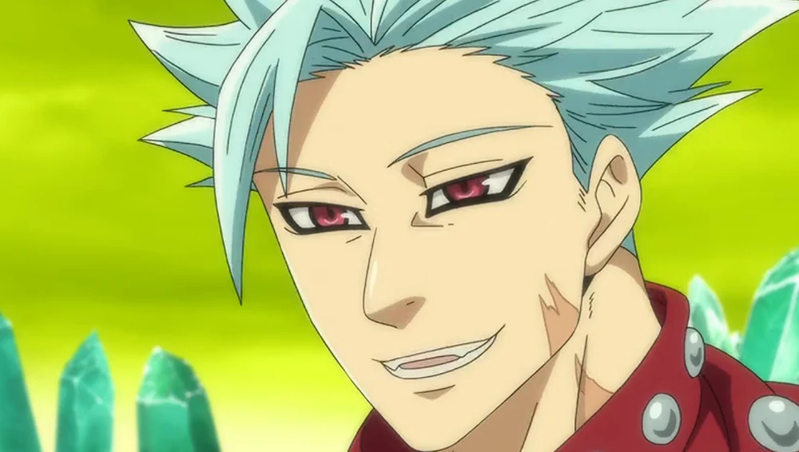
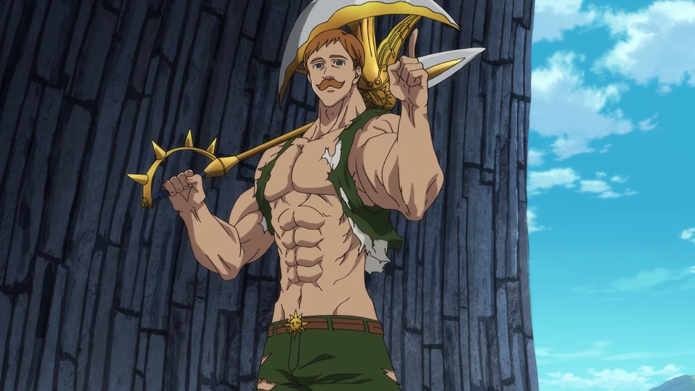

Ban
• Pasado: Nació en el pueblo pobre de Ravens, con una infancia difícil marcada por el maltrato y la necesidad de robar para sobrevivir. Conoció a Zhivago, quien fue como un padre para él.
• Los Siete Pecados Capitales: Fue reclutado por Meliodas tras coincidir en prisión. Tras la disolución del grupo por ser incriminados injustamente, estuvo encerrado en la prisión de Baste Dungeon hasta que supo que Meliodas seguía vivo.
• Evolución: Tras pasar un tiempo en el Purgatorio, su nivel de fuerza física, resistencia y habilidades aumentó de forma drástica, permitiéndole pelear de igual a igual con entidades del más alto pode

Escanor
es uno de los personajes más icónicos y memorables de Nanatsu no Taizai (Los Siete Pecados Capitales), ampliamente reconocido como el humano más fuerte de su universo. Dentro de la orden de caballeros, ostenta el título de El Pecado del Orgullo del León.
La dualidad de su poder: Sunshine. Su fuerza proviene de una habilidad mágica única llamada Sunshine (Luz Solar), la cual provoca cambios físicos y de personalidad radicales según el momento del día:
• Forma Nocturna: Es un hombre delgado, frágil, tímido y sumamente educado. Su nivel de combate se reduce al mínimo y trabaja pacíficamente atendiendo una taberna propia.
• Forma Diurna: A medida que sale el sol, su cuerpo crece exponencialmente llenándose de músculos imponentes y su personalidad se vuelve soberbia, arrogante y despectiva con sus enemigos.
• El Único (The One): Exactamente al mediodía, alcanza la cúspide de su poder durante un minuto. En este estado se convierte en la encarnación misma del sol, volviéndose prácticamente invencible y superando con creces los límites humanos.
